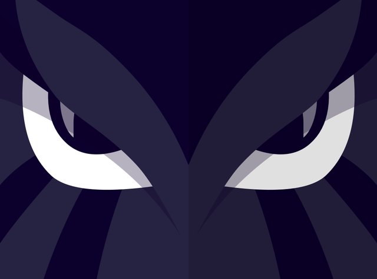
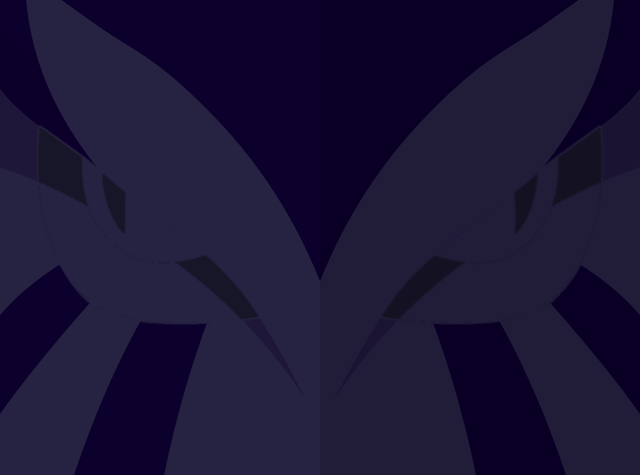
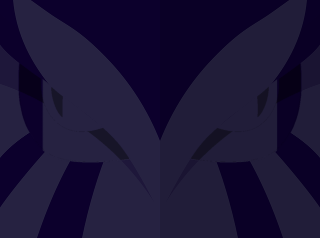
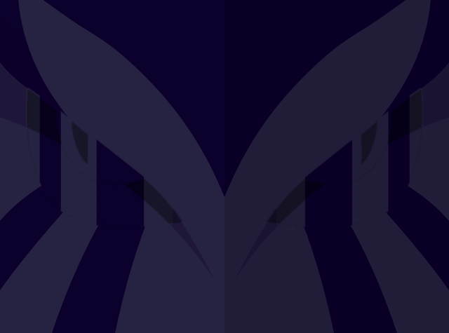
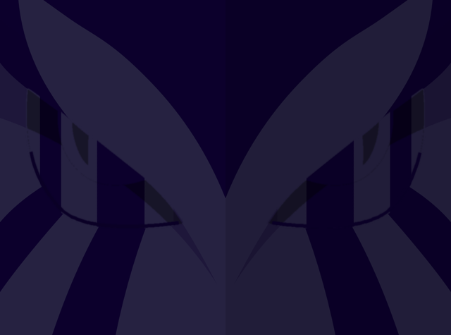
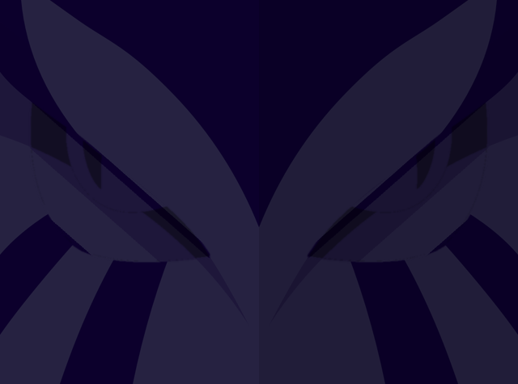
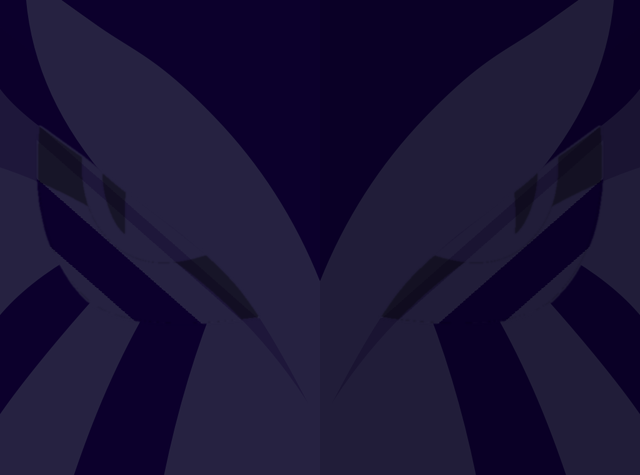
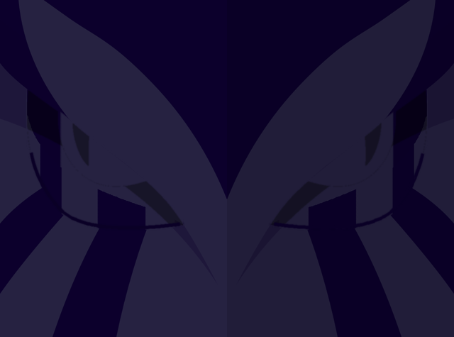
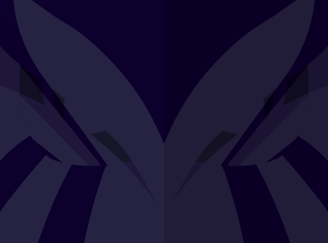
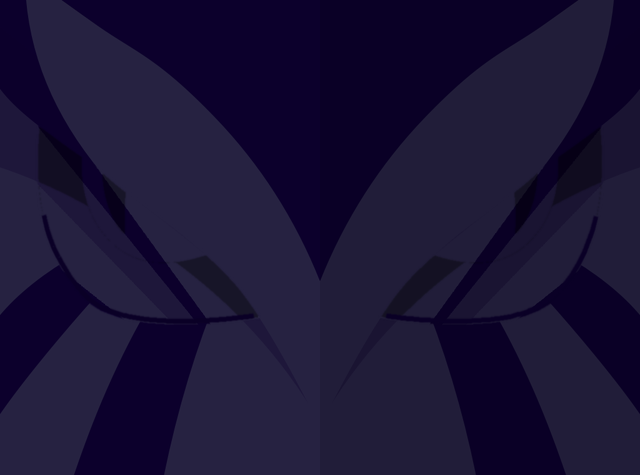

<title>Owl Eyelids</title>
<meta name="claude:viewport-fit-sides" content="cover">
<link rel="stylesheet" href="https://fonts.googleapis.com/css2?family=Nunito+Sans:opsz,wght@6..12,400;6..12,700;6..12,800&display=swap">
<style>
/* Layout: a single dark board in the app's own colours; the original on top, ten numbered options below in a two-column grid. */
:root {
  --bg: #17122c; --card: #221d3d; --line: #34315a; --text: #f4f2fb; --muted: #9b97b3; --accent: #7b57c9;
  --font: "Avenir Next", Avenir, "Nunito Sans", system-ui, sans-serif;
  color-scheme: dark;
}
body { background: var(--bg); color: var(--text); font-family: var(--font); }
main { max-width: 1040px; margin: 0 auto; padding-block: 28px 48px; padding-left: max(16px, env(safe-area-inset-left, 0px)); padding-right: max(16px, env(safe-area-inset-right, 0px)); display: flex; flex-direction: column; gap: 22px; }
h1 { margin: 0; font-size: 26px; font-weight: 800; text-wrap: balance; }
p { margin: 0; color: var(--muted); line-height: 1.5; max-width: 62ch; }
.ref { display: grid; grid-template-columns: minmax(0, 1fr); gap: 8px; max-width: 520px; }
.grid { display: grid; grid-template-columns: repeat(2, minmax(0, 1fr)); gap: 14px; }
@media (max-width: 640px) { .grid { grid-template-columns: minmax(0, 1fr); } }
figure { margin: 0; background: var(--card); border: 1px solid var(--line); border-radius: 14px; overflow: hidden; display: flex; flex-direction: column; }
figure img { display: block; width: 100%; height: auto; aspect-ratio: 640 / 475; max-width: 100%; }
figcaption { padding: 10px 14px 12px; display: flex; gap: 10px; align-items: baseline; }
figcaption b { font-size: 18px; font-weight: 800; color: var(--accent); font-variant-numeric: tabular-nums; min-width: 1.6em; }
figcaption span { line-height: 1.35; }
.label { font-size: 12px; letter-spacing: .08em; text-transform: uppercase; color: var(--muted); }
</style>
<main>
  <h1>Закрытые глаза совы: 10 вариантов</h1>
  <p>Все варианты сделаны прямо из логотипа: формы, цвета и полосы не перерисованы. Меняется только то, что видно на месте глаза, когда веко закрыто. Тень от брови оставлена на всех вариантах. Назови номер, который нравится, его и поставлю в приложение.</p>
  <div class="ref">
    <span class="label">Оригинал, глаза открыты</span>
    <figure></figure>
  </div>
  <div class="grid">
    <figure><figcaption><b>1</b><span>Гладкое веко цвета брови, с тенью</span></figcaption></figure>
    <figure><figcaption><b>2</b><span>Гладкое веко и тёмная линия ресниц</span></figcaption></figure>
    <figure><figcaption><b>3</b><span>Полосы сверху (бровь и тёмное) идут вниз через веко</span></figcaption></figure>
    <figure><figcaption><b>4</b><span>Полосы тела поднимаются вверх через веко</span></figcaption></figure>
    <figure><figcaption><b>5</b><span>Полосы тела вверх и линия ресниц</span></figcaption></figure>
    <figure><figcaption><b>6</b><span>Боковые перья тянутся вдоль разреза глаза</span></figcaption></figure>
    <figure><figcaption><b>7</b><span>Перья от переносицы тянутся наружу</span></figcaption></figure>
    <figure><figcaption><b>8</b><span>Сверху бровь, снизу тело, между ними линия ресниц</span></figcaption></figure>
    <figure><figcaption><b>9</b><span>Перья расходятся лучами от груди</span></figcaption></figure>
    <figure><figcaption><b>10</b><span>Лучи от груди и линия ресниц</span></figcaption></figure>
  </div>
</main>
